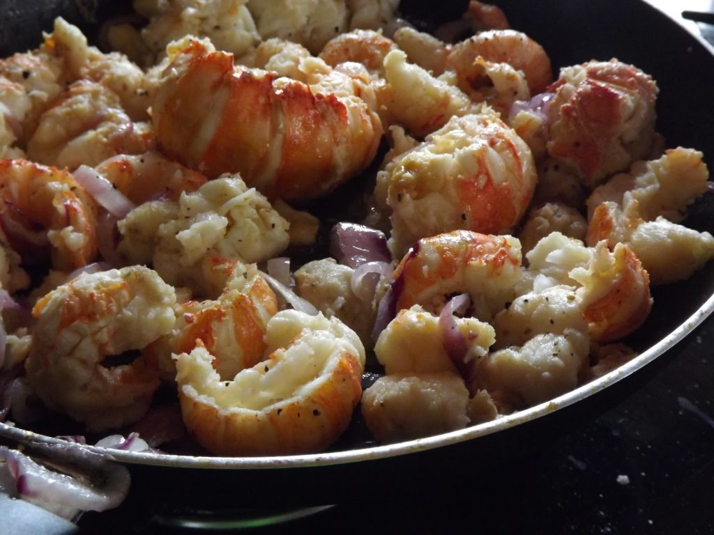

LAGOSTA CAPRICHADA AO ALHO E ÓLEO

Ingredientes
- 1 kilo de lagosta ao natural ou de filé de cabeça
- 10 (dez) dentes de alho (grandes) ou 2 (duas) colheres de purê de alho
- sal a gosto
- 1 (uma) colher de sopa de ervas variadas a gosto
- 2 (duas) cebolas picadas
- 1 (um) pimentão verde picado
- 1 (um) pimentão vermelho picado
- 4 (quatro) tomates maduros picados
- 4 (quatro) raminhos de coentro picados
- 1/2 xícara de azeite de oliva
Modo de preparo
- Cozinhe a lagosta em panela de pressão por 10 (dez) dez minutos, usando pouca água e colocando um
filete
de
azeite.
- Depois de cozida escorra toda a água e espere esfriar.
- Separe a carne da casca e retire a veia de fel na parte superior do corpo.
- Acrescente o alho amassado, juntamente com as ervas.
- Deixe pegar gosto por, no mínimo, 30 minutos.
- Ferver o óleo em fogo brando e fritar os pedaços de lagosta.
- Servir ainda quente.
- Os demais ingredientes devem ser refogados no óleo usado para a fritura e servido como complemento.
- Proceda da mesma forma para com o filé de lagosta, que apenas deve ser cozido por 20 (vinte) minutos
em
panela normal, também acrescentando um filete de azeite, escorrendo toda a água após a fervura.